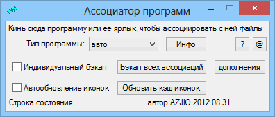

assotiations
Назначение
Ассоциатор программ (WinXP или LiveCD).

Взаимосвязанные
ContMenuFiles
ContMenuFiles
Recovery_associative_icons
Порядок использования программы.
1. Сначала делаем бэкап всех ассоциаций (или контрольную точку восстановления)
2. Кидаем программу в диалоговое окно. Если ассоциации не определились автоматически, то в раскрывающемся списке выбираем тип программы, то есть для плеера нужно выбрать "Видео", для текстовых файлов - "текст". После выбора типа жмём "Инфо" чтобы посмотреть информацию об ассоциированных расширениях для этого типа. Например, чтоб ассоциировать видеофайлы с zplayer, нужно выбрать в списке "Видео" и кинуть в окно программы zplayer или ярлык zplayer'a. Если в строке состояния появился текст "Bидeo-фaйлы accoцииpoвaны c zplayer.exe", значит ассоциация прошла успешно.
3. Кидайте любой файл в утилиту, чтобы открыть каталог ассоциированной программы.
4. Если не работает функционал "перетащить и бросить", то используйте кнопку "Открыть", но перед этим рекомендуется скопировать путь в буфер обмена. Например если вы используете нестандартную папку, не "Program Files", то чтобы не открывать её каждый раз через диалог выбора, просто скопируйте адрес в адресной строке.
Также если вы копируете путь к EXE-файлу из свойств ярлыка или копируете полный путь к ярлыку, это автоматически будет использовано.
При регистрации аудио файлов выполняется снос следующих веток реестра:
RegDelete("HKCU\Software\Microsoft\Windows\CurrentVersion\Explorer\FileExts\.<расширение_файла>, "ProgID")
RegDelete("HKCR\\shell\open\DropTarget")
так как это создавало проблему для ассоциаций в WinXP.